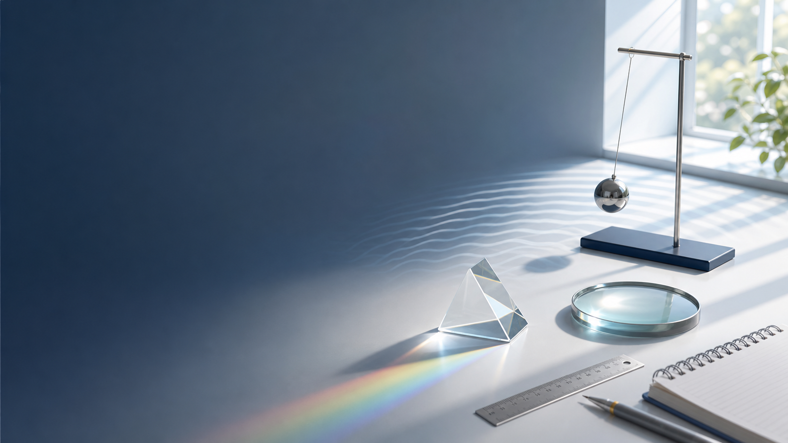
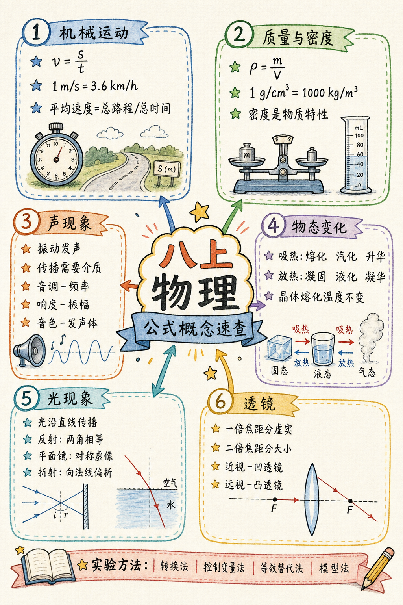

怎么学
每一节用同一个四步法
先看现象
别急着背结论，先问：这件事在生活里哪里见过？课本图片和实验图先看懂。
抓住关键词
每节只先记 3-5 个词，例如“参照物、速度、平均速度”，再把它们连成句子。
画图或列表
运动画过程，声音画振动，物态变化画箭头，光学画光路，密度列 m、V、ρ。
做一道会讲的题
题做完后用自己的话讲一遍原因。能讲清楚，才算真的会。
教材 + 课件
自学时这样搭配资料
电子书负责“准”
先按 2024 秋版目录走：第 1 章第 4 节是“速度的测量”，第 2、3、5 章都有跨学科实践，第 6 章是“测量液体和固体的密度”“密度的应用”。
课件负责“会”
课件里有大量例题和课堂提醒，例如单位换算、转换法、多次实验、玻璃板代替平面镜、凸透镜操作、测密度专题。学完课本再看课件，最容易补上做题手感。
练习负责“稳”
每章都按三类题训练：一句话解释现象、按步骤写实验、用公式或图像解决问题。遇到错题，不只改答案，要写清“错在概念、单位、图像还是实验步骤”。
必背速查
必备公式及概念

机械运动
v = s / t
- v 表示速度，s 表示路程，t 表示时间。
- 变形：s = vt，t = s / v。
- 单位：1 m/s = 3.6 km/h。
- 平均速度 = 总路程 / 总时间，不是两个速度直接平均。
质量与密度
ρ = m / V
- ρ 表示密度，m 表示质量，V 表示体积。
- 变形：m = ρV，V = m / ρ。
- 单位：1 g/cm³ = 1000 kg/m³。
- 密度是物质特性，可用于鉴别物质、判断空心实心。
测量与误差
- 刻度尺读数 = 准确值 + 估读值 + 单位。
- 分度值是相邻两条刻度线表示的长度。
- 误差不可避免，错误可以避免。
- 多次测量取平均值，可以减小误差。
声现象
- 声音由物体振动产生，传播需要介质。
- 音调由频率决定：频率越高，音调越高。
- 响度与振幅、距离有关：振幅越大，响度越大。
- 音色由发声体本身决定，用来区分不同声音。
物态变化
- 吸热：熔化、汽化、升华。
- 放热：凝固、液化、凝华。
- 晶体有固定熔点，熔化时继续吸热但温度不变。
- 蒸发和沸腾都是汽化；“白气”多是液化形成的小液滴。
光现象
- 光在同种均匀介质中沿直线传播。
- 反射定律：三线共面，两角相等，法线居中。
- 平面镜成像：正立、等大、虚像，像物关于镜面对称。
- 折射：空气斜射入水中，折射光线向法线偏折。
透镜成像
一倍焦距分虚实，二倍焦距分大小
- u > 2f：倒立、缩小、实像，照相机。
- f < u < 2f：倒立、放大、实像，投影仪。
- u < f：正立、放大、虚像，放大镜。
- 近视眼用凹透镜，远视眼用凸透镜。
实验方法
- 转换法：把不易观察的现象变成容易观察的现象。
- 控制变量法：研究一个因素时，保持其他条件相同。
- 等效替代法：用相同效果的对象代替研究对象。
- 模型法：用光线、示意图等模型帮助分析问题。
章节路线
按课本顺序自学
01
机械运动
先把“动”和“快慢”说清楚
长度和时间的测量
运动的描述
运动的快慢
速度的测量
重点
- 刻度尺、秒表的正确使用和估读。
- 参照物决定“运动”还是“静止”。
- 速度表示运动快慢，平均速度描述一段路程的整体快慢。
- 斜面小车实验：测路程、测时间、算平均速度。
难点
- 课件提醒：单位换算是初中物理第一个难点，m/s 和 km/h 必须熟。
- 平均速度不是速度的平均值，而是总路程除以总时间。
- 参照物不能选研究对象本身；选定后就假定它静止。
- 图像题先看横轴、纵轴、单位，再看斜率或变化趋势。
课本实验
测量小车速度：斜面要让小车运动可测，记录全程、上半段、下半段数据，比较是否越来越快。
自学动作
每天做 5 道单位换算，3 道平均速度；计算题必须写公式、代入、结果和单位。
讲解怎么想
机械运动题先问三件事：研究谁、选谁作参照物、比较什么量。参照物题用“假装它不动”来判断；速度题只认总路程和总时间；实验题先写测什么、用什么测、怎么算。
书上对应题型
- 测量方案：硬币直径、纸张厚度、铜丝直径、摆的周期。
- 参照物判断：列车行李、船看山、空间站对接、观光电梯。
- 速度计算：步行速度、车速表、路灯杆间距、斜面分段平均速度。
- 实验分析：小车全程和半程速度不同、里程碑估测自行车速度。
对应练习
1. 一辆车 10 s 通过 200 m，平均速度是多少？合多少 km/h？
v = s / t = 200 m / 10 s = 20 m/s；20 m/s = 72 km/h。
2. 坐船时看到岸边的山向船尾“跑”，选的参照物是谁？
选船或船上的人为参照物。参照物不同，运动和静止的判断可能不同。
3. 斜面小车下半段速度大于上半段，说明小车怎样运动？
说明小车沿斜面向下运动时越来越快，做变速运动。
v = s / t，1 m/s = 3.6 km/h
趣味理解：坐车时你觉得窗外树在后退，是因为你选了自己或车作为参照物。
02
声现象
声音是“振动”发出的消息
声音的产生与传播
声音的特性
声的利用
噪声的危害和控制
制作隔音房间模型
重点
- 声音由物体振动产生，传播需要介质。
- 音调看频率，响度看振幅和距离，音色看发声体特点。
- 声音可以传递信息，也可以传递能量。
- 噪声控制分三处：声源、传播过程、人耳处。
难点
- “高声说话”的高常指响度，不一定是音调。
- 真空不能传声，光却可以在真空中传播。
- 课件常考：把鼓面纸屑、音叉小球的微小振动放大，这是转换法。
- 超声多用于定位、检测、清洗；次声可用于监测地震、台风等。
课本实践
制作隔音房间模型：先找噪声来源，再比较不同材料和结构的隔声效果。
自学动作
用“产生-传播-接收”三段法解释声音题；看到“看不见振动”就想转换法。
讲解怎么想
声现象题按“谁在振动、通过什么传播、听到的声音有什么特点”来拆。看见小球跳动、纸屑跳动，就是把微小振动放大；遇到超声、次声，要先判断是传递信息还是传递能量。
书上对应题型
- 振动与传声：橡皮筋、音叉、骨传导、水中花样游泳、长铁管传声。
- 声音特性：频率计算、“高低”含义、乐器区分、制作简易乐器。
- 声的利用：回声测距、超声探伤/碎石、声传递信息和能量。
- 噪声控制：校园噪声调查、隔音板、绿化带、防噪声耳罩材料。
对应练习
1. 昆虫翅膀 2 s 振动 700 次，频率是多少？人耳能听到吗？
频率 f = 700 / 2 Hz = 350 Hz。350 Hz 在 20-20000 Hz 之间，人耳通常能听到。
2. 用超声波测海深，4 s 收到回波，声速 1500 m/s，海深多少？
声波走了往返路程，海深 s = vt / 2 = 1500 m/s × 4 s / 2 = 3000 m。
3. “声纹锁”主要依据声音的哪一特性识别人？
主要依据音色。不同发声体的声音特色不同。
趣味理解：音调像钢琴键的位置，响度像音量旋钮，音色像每个人独特的声音名片。
03
物态变化
看懂“吸热”和“放热”的方向
温度
熔化和凝固
汽化和液化
升华和凝华
厨房中的物态变化
固态
液态
气态
重点
- 温度表示冷热程度，液体温度计根据热胀冷缩制成。
- 熔化、汽化、升华吸热；凝固、液化、凝华放热。
- 晶体熔化时温度保持不变，有固定熔点。
- 水沸腾实验：沸腾前升温，沸腾后继续吸热但温度不变。
难点
- 蒸发和沸腾都属于汽化，但发生条件不同。
- “白气”通常不是水蒸气，而是小液滴。
- 课件提醒：水浴法能让固体受热均匀，也方便控制升温速度。
- 图像水平段不是“没有吸热”，而是吸热用于改变状态。
课本实验
海波和蜡的熔化、水的沸腾、人工造霜。训练重点是读表、描点、画图像、写结论。
自学动作
把六种物态变化画成箭头图，再给每个箭头配一个生活例子。
讲解怎么想
物态变化题先判断“原来是什么态、后来是什么态”，再判断吸热还是放热。遇到图像，先找水平段；遇到生活现象，先问“看得见的是不是小液滴或小冰晶”。
书上对应题型
- 温度计：自制温度计灵敏度、温度计读数与使用规则。
- 图像题：晶体熔化图像、熔点、熔化持续时间、水沸腾图像。
- 生活解释：露珠、瓶壁变湿、坎儿井、干冰人工降水、霜的形成。
- 实验评价：记录间隔过长、冰未加热已熔化、沸腾气泡变化。
对应练习
1. 晶体熔化图像出现水平段，说明什么？
说明晶体正在熔化，继续吸热但温度保持不变；水平段对应的温度就是熔点。
2. 冰箱中取出的瓶子外壁变湿，是什么物态变化？为什么擦不干？
空气中的水蒸气遇冷液化成小水滴。瓶子仍较冷，水蒸气会继续液化，所以马上擦可能又变湿。
3. 干冰用于人工降水，里面至少涉及哪些物态变化？
干冰升华吸热；空气中的水蒸气遇冷液化成小水滴或凝华成小冰晶。
趣味理解：冰融化时像在“攒能量拆结构”，所以温度会暂时停住。
04
光现象
光学题的核心动作是画光路
光的直线传播
光的反射
平面镜成像
光的折射
光的色散
重点
- 光在同种均匀介质中沿直线传播。
- 反射定律：三线共面，两角相等，法线居中。
- 平面镜成像：正立、等大、虚像，像物关于镜面对称。
- 白光可色散成多种色光，红外线、紫外线也有应用。
难点
- 反射角、入射角都是光线与法线的夹角，不是与镜面的夹角。
- 折射时光路会偏折，但别忘了法线是判断方向的参考。
- 课件提醒：反射、折射实验要多次改变入射角，不能只测一次就下结论。
- 平面镜实验用薄玻璃板，是为了既能成像又能确定像的位置。
课本实验
反射规律、平面镜成像、折射特点、色散实验。每个实验都要会说器材为什么这样选。
自学动作
光学题先画法线，再画入射光线、反射或折射光线；平面镜题先找对称点。
讲解怎么想
光学题不要靠想象硬猜，先画图。反射题先画法线和等角；平面镜题用“像物关于镜面对称”；折射题先分清光从哪种介质进入哪种介质，再判断向法线还是远离法线偏折。
书上对应题型
- 直线传播：手影、井底之蛙、光年与太阳到地球距离估算。
- 反射作图：入射角/反射角、自行车尾灯、太阳光入井、月光下积水。
- 平面镜：玻璃板原因、像距计算、画像点、视力表与潜望镜。
- 折射与色散：玻璃砖光路、湖中云和鱼、筷子弯折、彩虹和色光混合。
对应练习
1. 光与镜面成 30°，入射角和反射角各是多少？
入射角是光线与法线的夹角。光与镜面成 30°，与法线成 60°，所以入射角 60°，反射角也 60°。
2. 人站在镜前 1 m，像与人相距多少？人后退 0.5 m 后呢？
像距等于物距。先相距 2 m；后退后物距为 1.5 m，人与像相距 3 m，像的大小不变。
3. “云在水中飘，鱼在云上游”分别是什么现象？
云在水中是平静水面反射形成的虚像；鱼看起来位置变浅，主要是光从水中射入空气发生折射。
趣味理解：镜子里的像不是“藏在镜子后面”，而是你的眼睛按光线反向延长看到的虚像。
05
透镜及其应用
凸透镜成像是本册最值得反复练的规律
透镜
生活中的透镜
凸透镜成像规律
眼睛和眼镜
制作望远镜
物距
像的特点
应用
u > 2f
倒立、缩小、实像
照相机
f < u < 2f
倒立、放大、实像
投影仪
u < f
正立、放大、虚像
放大镜
重点
- 凸透镜对光有会聚作用，凹透镜对光有发散作用。
- 会判断实像和虚像，会联系照相机、投影仪、放大镜。
- 近视眼用凹透镜矫正，远视眼用凸透镜矫正。
- 课本第 5 节是跨学科实践：制作望远镜。
难点
- 焦点、焦距、物距、像距四个词要分清。
- 成实像时，物体越靠近焦点，像越远、越大。
- “一倍焦距分虚实，二倍焦距分大小”非常关键。
- 课件补充显微镜和望远镜：物镜、目镜都可看作凸透镜，注意两次成像。
课本实验
探究凸透镜成像规律：记录焦距、物距、像距、像的倒正/大小/虚实，光屏上接到的是实像。
自学动作
先背三格表，再练操作变化：成实像时物靠近透镜，像远离透镜且变大。
讲解怎么想
透镜题先分透镜种类，再找焦点和焦距。凸透镜成像题按“物距在哪一段”查表，随后写倒正、大小、虚实和应用；实验操作题要抓住光屏只能承接实像。
书上对应题型
- 透镜作图：平行光过焦点、根据光路选透镜、比较焦距和偏折程度。
- 生活应用：冰透镜取火、瓶装水聚光、自制照相机调像大小。
- 成像规律：照相机/投影仪/放大镜、实像虚像、物距变化实验表格。
- 眼睛眼镜：近视远视判断、矫正透镜、爱眼措施。
对应练习
1. 焦距 10 cm 的凸透镜作照相机，胶片与镜头距离应大致在哪个范围？
照相机成倒立、缩小实像，物距大于 2f，像距在 f 和 2f 之间，所以胶片与镜头距离约在 10-20 cm 之间。
2. 凸透镜成实像时，物体靠近焦点，像怎样变化？
像远离凸透镜，并且变大。可记“物近像远像变大”。
3. 近视眼镜放在台灯下，镜片后区域变暗，说明镜片对光有什么作用？
近视眼镜是凹透镜，对光有发散作用，所以透过镜片后的光变散，局部显得更暗。
06
质量与密度
用一个公式把“轻重”和“材料”分开
质量
密度
测量液体和固体的密度
密度的应用
重点
- 质量是物体所含物质的多少，与位置、形状、状态无关。
- 密度是物质的一种特性，同种物质密度一般相同。
- 会用天平、量筒测质量和体积。
- 会用 m-V 图像理解同种物质质量与体积成正比。
难点
- ρ、m、V 的单位要配套，g/cm³ 和 kg/m³ 常要换算。
- 测不规则固体体积用排水法，读数要看液面变化。
- 课件提醒：先测体积再测质量，若小石块粘水，会让质量偏大。
- 判断空心实心常比较体积、质量或密度。
课本实验
测液体密度、测不规则固体密度。核心永远是先想办法得到 m 和 V，再代入 ρ = m / V。
自学动作
把每道密度题写成三列表：已知 m、已知 V、要求 ρ/m/V；单位不统一先换算。
讲解怎么想
质量题要记住“物质多少不随位置、形状、状态改变”。密度题先统一单位，再选公式变形；实验题一定区分质量怎么测、体积怎么测，最后再讨论误差偏大还是偏小。
书上对应题型
- 质量测量：太空中质量是否变化、天平调平、砝码游码读数、微小质量累积法。
- 密度计算：锇和中子星、水和空气质量、人体体积、密度概念辨析。
- 实验测密度：量筒读数、金属块排水法、盒装牛奶密度、中空工艺品判断。
- 应用提高：沙子运输、铜线长度、铝箔厚度、图像斜率、空心实心。
对应练习
1. 225.9 g 金属锇体积 10 cm³，密度是多少？
ρ = m / V = 225.9 g / 10 cm³ = 22.59 g/cm³。
2. 2.5 L 塑料瓶最多装多少千克水？
2.5 L = 2.5 dm³ = 2.5 × 10^-3 m³。m = ρV = 1.0 × 10³ kg/m³ × 2.5 × 10^-3 m³ = 2.5 kg。
3. 铜工艺品质量 89 g、体积 20 cm³，铜密度约 8.9 g/cm³，是否空心？
若为实心铜，体积 V = m / ρ = 89 / 8.9 = 10 cm³，小于实际体积 20 cm³，所以是空心的。
ρ = m / V，1 g/cm³ = 1000 kg/m³
趣味理解：同样大小的铁块比木块重，不是因为铁“更大”，而是铁的密度更大。
难点重点
最容易卡住的 12 个地方
单位换算
先写原单位，再写目标单位。速度常用：1 m/s = 3.6 km/h；密度常用：1 g/cm³ = 1000 kg/m³。
估读和视线
刻度尺要估读到分度值下一位；温度计和量筒读数都要看清视线位置。
转换法
鼓面纸屑、音叉小球、扬声器纸屑，都是把看不清的振动变成看得见的现象。
平均速度
只认总路程和总时间。不要把两段速度直接相加再除以 2，除非两段时间相等。
白气与水蒸气
看得见的“白气”多是小水滴；真正的水蒸气通常看不见。
光路图
先画法线，再标入射角和反射角。角是和法线比，不是和镜面比。
多次实验
反射、折射、平面镜成像、凸透镜成像都要多做几组，目的是找普遍规律。
凸透镜成像
先判断物距在哪个范围，再写倒正、大小、虚实，最后联系应用。
控制变量
研究一个因素时，其他条件尽量相同。题目问“为什么这样做”，多半在考控制变量。
密度应用
会用密度解释鉴别物质、判断空心、计算体积和质量。
测密度顺序
液体先测总质量再倒出，固体注意是否吸水或粘水；顺序会影响误差方向。
平面镜成像
用对称找像点；玻璃板要薄且竖直，完全相同的蜡烛用于比较像和物大小。
课件拓展
第六章测密度专题，学有余力再挑战
基础必会
天平 + 量筒：测液体密度、测不规则固体密度。先把课本实验步骤写顺，再练误差分析。
只用量筒
一漂一浸没法：漂浮得质量，浸没得体积。适合密度大于水的小物体或小瓶类题。
借助浮力
二提法、压力差法、漂浮法都在课件专题里。核心是用浮力间接求体积。
压轴思路
等体积代换、等压强法、杠杆平衡法属于提高题。先看懂“谁相等”，再写表达式。
学习计划
6 周自学安排
机械运动
每天 20 分钟练单位换算、参照物和速度计算，周末完整写一遍“速度的测量”实验。
声现象
把音调、响度、音色做成三列表；再用材料对比做一个隔音房间模型草图。
物态变化
画六种物态变化箭头图，重点练晶体熔化、水沸腾图像和厨房现象解释。
光现象
每天画 3 张光路图，尤其是反射和平面镜成像。
透镜
背熟凸透镜三种成像情况，做一次望远镜制作方案，再看课件里的显微镜拓展。
质量与密度
集中练 ρ = m / V 的变形计算、单位换算和测密度实验，学有余力挑战专题法。
自测
每天 5 分钟检查自己是不是真的会了
点击按钮抽一道自测题。